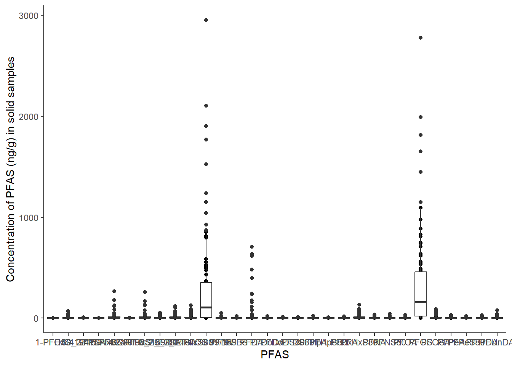

PFAS_insects |>
select(PFOS) |>
filter(PFOS > 100)# A tibble: 65 × 1
PFOS
<dbl>
1 229.
2 140.
3 1045.
4 442.
5 540.
6 223.
7 976.
8 559.
9 830.
10 162.
# ℹ 55 more rowsSee: https://www.tidyverse.org/
The pipe operator %>% (or |>)
See: https://r4ds.hadley.nz/data-transform
https://r4ds.hadley.nz/data-transform#sec-the-pipe
To change the shortcut Ctrl+shift+M to use the new pipe, go to “Global options” -> “Code” -> “Use native pipe operator..”
https://dplyr.tidyverse.org/index.html
select and filter
PFAS_insects |>
select(PFOS) |>
filter(PFOS > 100)# A tibble: 65 × 1
PFOS
<dbl>
1 229.
2 140.
3 1045.
4 442.
5 540.
6 223.
7 976.
8 559.
9 830.
10 162.
# ℹ 55 more rowsHere, we first select only the PFOS variable and then filter to only include all PFOS rows that have a value above 100.
mutate
PFAS_insects |>
mutate(ratioPFOS_PFOA = PFOS/PFOA) |>
select(ID, PFOS, PFOA, ratioPFOS_PFOA, everything()) |>
glimpse()Rows: 108
Columns: 48
$ ID <chr> "W1", "W2", "W3", "W4", "W5", "W6", "W7", "W8", "W…
$ PFOS <dbl> 228.5876694, 140.0461141, 0.1487718, 1044.6492478,…
$ PFOA <dbl> 21.69212645, 8.37805605, 0.21929477, 53.87371338, …
$ ratioPFOS_PFOA <dbl> 10.5378175, 16.7158244, 0.6784101, 19.3907043, 36.…
$ `Full ID` <chr> "K1 W S17", "KS W S17", "KRef W S17", "K1 W F17", …
$ `Sampling site` <chr> "K1", "KS", "KRef", "K1", "KS", "KRef", "K1", "KS"…
$ Number <dbl> 1, 1, 1, 1, 1, 1, 1, 1, 1, 2, 2, 6, 6, 6, 4, 4, 4,…
$ Group <chr> "Water", "Water", "Water", "Water", "Water", "Wate…
$ Group_Family <chr> "Water 1_S17", "Water S_S17", "Water Ref_S17", "Wa…
$ `g ww` <dbl> NA, NA, NA, NA, NA, NA, NA, NA, NA, 226.2650, 265.…
$ `g dw` <dbl> NA, NA, NA, NA, NA, NA, NA, NA, NA, 166.1500, 180.…
$ Quantity <chr> NA, NA, NA, NA, NA, NA, NA, NA, NA, NA, NA, ">50?"…
$ `Extraction (mL_g)` <dbl> 509.3000, 503.1000, 504.8000, 505.2000, 502.9000, …
$ Year <dbl> 2017, 2017, 2017, 2017, 2017, 2017, 2018, 2018, 20…
$ Unit <chr> "ng L-1", "ng L-1", "ng L-1", "ng L-1", "ng L-1", …
$ PFBA <dbl> 27.43981936, 9.58079905, 0.03025223, 36.65399842, …
$ PFPeA <dbl> 35.52523071, 22.47445836, 0.04000000, 81.99861441,…
$ PFBS <dbl> 81.77518162, 39.52752932, 0.11291601, 129.03939034…
$ PFHxA <dbl> 56.52955036, 26.18425760, 0.22167195, 131.18784640…
$ PFHpA <dbl> 25.845474180, 14.325581395, 0.229001585, 56.980997…
$ PFPeS80 <dbl> 6.390536030, 3.072351421, 0.040000000, 24.10866983…
$ PFHxS80 <dbl> 58.36147654, 27.92029418, 0.11945325, 211.65459224…
$ PFHpS80 <dbl> 4.59866483, 2.64738621, 0.04000000, 25.81888361, 5…
$ PFNA <dbl> 7.66129982, 3.07553170, 0.04000000, 11.20051465, 6…
$ PFOSA <dbl> 5.345965050, 0.485986881, 0.001421537, 13.07422802…
$ PFDA <dbl> 2.01335166, 0.42238124, 0.04000000, 4.60768013, 1.…
$ PFUnDA <dbl> 0.77694875, 0.12482608, 0.04000000, 2.05740301, 0.…
$ PFNS80 <dbl> 0.25152170, 0.14748559, 0.04000000, 0.97604909, 0.…
$ PFDS80 <dbl> 0.04000000, 0.04000000, 0.04000000, 0.17537609, 0.…
$ PFDoDA <dbl> 0.10799136, 0.04000000, 0.04000000, 0.34065717, 0.…
$ PFTrDA <dbl> 0.04000000, 0.04000000, 0.04000000, 0.04000000, 0.…
$ PFDoDS80 <dbl> 0.04000000, 0.04000000, 0.04000000, 0.04000000, 0.…
$ `6_2_FTSA` <dbl> 11.9654428, 1.8833234, 0.0400000, 13.1551861, 9.13…
$ `8_2_FTSA` <dbl> 1.89083055, 0.16974757, 0.04000000, 2.64806017, 0.…
$ `10_2 FTSA` <dbl> 0.31710190, 0.04000000, 0.04000000, 0.77197150, 0.…
$ `3/4/5-PFOS80/98.9` <dbl> 52.09326527, 34.14410654, 0.04000000, 260.75296912…
$ `6/2-PFOS169/80` <dbl> 37.18869036, 22.57980521, 0.04000000, 186.81631037…
$ `1-PFOS 419/169` <dbl> 9.94718241, 6.85311071, 0.04000000, 52.70704671, 2…
$ `L-PFOS 99/169` <dbl> 233.8221088, 137.8682171, 0.1561014, 1014.2911718,…
$ `L-PFHxS80` <dbl> 55.95817789, 26.48558935, 0.11489699, 197.49920823…
$ `1-PFHxS` <dbl> 0.67956018, 0.45875571, 0.04000000, 2.70744260, 0.…
$ `4/2-PFHxS` <dbl> 7.68270175, 3.76446035, 0.04000000, 28.67082344, 4…
$ `3-PFHxS` <dbl> 2.47378755, 1.15543629, 0.04000000, 9.22090261, 1.…
$ sum_PFOS <dbl> 327.8168074, 203.6231366, 0.2687718, 1544.9255740,…
$ sum_brPFOS <dbl> 99.2291380, 63.5770225, 0.1200000, 500.2763262, 21…
$ sum_PFHxS <dbl> 69.1975260, 33.2989465, 0.2394532, 252.2537609, 41…
$ sum_brPFHxS <dbl> 10.8360495, 5.3786524, 0.1200000, 40.5991686, 6.45…
$ sum_21PFAS <dbl> 687.261371, 369.621785, 1.882783, 2385.928575, 880…Mutate creates a new variable by some conditions such as dividing the PFOS with PFOA. We can thereafter sort how the columns are arranged by select ID, PFOS, PFOA, ratioPFOS_PFOA in this order. The everything()function will select all other columns. This way, we have made a new order of the columns. The glimpse() function is similar as str() but gives a better overview of the data frame.
Using mutate with case_when helper function
PFAS_insects |>
mutate(ratioPFOS_PFOA = case_when(PFOS/PFOA > 10 ~ "HighPFOS",
PFOS/PFOA <= 10 & PFOS/PFOA > 5 ~ "MediumPFOS",
PFOS/PFOA <= 5 ~ "LowPFOS")) |>
select(ID, ratioPFOS_PFOA) |>
glimpse()Rows: 108
Columns: 2
$ ID <chr> "W1", "W2", "W3", "W4", "W5", "W6", "W7", "W8", "W9", "…
$ ratioPFOS_PFOA <chr> "HighPFOS", "HighPFOS", "LowPFOS", "HighPFOS", "HighPFO…arrange
PFAS_insects |>
#arrange(desc(PFOS)) |>
arrange(PFOS) |>
select(ID, PFOS, everything()) |>
glimpse()Rows: 108
Columns: 47
$ ID <chr> "W3", "P36", "W9", "S3", "SW10", "D10", "W6", "L13…
$ PFOS <dbl> 0.1487718, 0.4887884, 0.5090367, 0.5269612, 0.5269…
$ `Full ID` <chr> "KRef W S17", "Kref Chi", "KRef W S18", "KRefS", "…
$ `Sampling site` <chr> "KRef", "KRef", "KRef", "KRef", "KRef", "KRef", "K…
$ Number <dbl> 1, 5, 1, 2, 4, 4, 1, 3, 5, 2, 3, 4, 4, 4, 3, 3, 5,…
$ Group <chr> "Water", "Terrestrial invertebrate consumers", "Wa…
$ Group_Family <chr> "Water Ref_S17", "Lithobiomorpha", "Water Ref_S18"…
$ `g ww` <dbl> NA, 0.2538, NA, 265.0800, 0.4753, 0.5937, NA, 0.60…
$ `g dw` <dbl> NA, 0.0777, NA, 180.8600, 0.2866, 0.1412, NA, 0.10…
$ Quantity <chr> NA, "6", NA, NA, "426", "388", NA, "165", "24", NA…
$ `Extraction (mL_g)` <dbl> 504.8000, 0.5530, 503.5000, 0.5390, 0.1526, 0.1061…
$ Year <dbl> 2017, 2017, 2018, 2017, 2018, 2018, 2017, 2017, 20…
$ Unit <chr> "ng L-1", "ng g-1", "ng L-1", "ng g-1", "ng g-1", …
$ PFBA <dbl> 0.03025223, 0.96429560, 0.03025223, 0.32282004, 0.…
$ PFPeA <dbl> 0.04000000, 0.37956600, 0.04000000, 0.06666667, 8.…
$ PFBS <dbl> 0.11291601, 0.01699019, 0.08659384, 0.01389705, 0.…
$ PFHxA <dbl> 0.22167195, 0.06666667, 0.25878848, 0.06666667, 0.…
$ PFHpA <dbl> 0.229001585, 0.009990188, 0.186494538, 0.009072167…
$ PFPeS80 <dbl> 0.040000000, 0.066666667, 0.040000000, 0.001333333…
$ PFHxS80 <dbl> 0.11945325, 0.02561151, 0.13286991, 0.05092416, 0.…
$ PFHpS80 <dbl> 0.040000000, 0.066666667, 0.040000000, 0.066666667…
$ PFOA <dbl> 0.21929477, 0.04596075, 0.19404171, 0.03321067, 0.…
$ PFNA <dbl> 0.04000000, 0.06666667, 0.04000000, 0.06666667, 0.…
$ PFOSA <dbl> 0.001421537, 0.066666667, 0.006752731, 0.066666667…
$ PFDA <dbl> 0.04000000, 0.06666667, 0.04000000, 0.06666667, 0.…
$ PFUnDA <dbl> 0.04000000, 0.19276673, 0.04000000, 0.02072712, 0.…
$ PFNS80 <dbl> 0.04000000, 0.06666667, 0.04000000, 0.06666667, 0.…
$ PFDS80 <dbl> 0.04000000, 0.06666667, 0.04000000, 0.06666667, 0.…
$ PFDoDA <dbl> 0.04000000, 0.06666667, 0.04000000, 0.06666667, 0.…
$ PFTrDA <dbl> 0.04000000, 0.06666667, 0.04000000, 0.06666667, 0.…
$ PFDoDS80 <dbl> 0.04000000, 0.06666667, 0.04000000, 0.06666667, 0.…
$ `6_2_FTSA` <dbl> 0.04000000, 0.08178308, 0.04000000, 0.10336846, 0.…
$ `8_2_FTSA` <dbl> 0.04000000, 0.06666667, 0.04000000, 0.06666667, 0.…
$ `10_2 FTSA` <dbl> 0.04000000, 0.06666667, 0.04000000, 0.06666667, 0.…
$ `3/4/5-PFOS80/98.9` <dbl> 0.04000000, 0.03345389, 0.13823237, 0.04474999, 0.…
$ `6/2-PFOS169/80` <dbl> 0.04000000, 0.06666667, 0.09751738, 0.06402691, 0.…
$ `1-PFOS 419/169` <dbl> 0.04000000, 0.06666667, 0.04000000, 0.06666667, 0.…
$ `L-PFOS 99/169` <dbl> 0.15610143, 0.51066908, 0.50844091, 0.57555371, 0.…
$ `L-PFHxS80` <dbl> 0.11489699, 0.01757597, 0.11519364, 0.04788187, 0.…
$ `1-PFHxS` <dbl> 0.04000000, 0.06666667, 0.04000000, 0.06666667, 0.…
$ `4/2-PFHxS` <dbl> 0.04000000, 0.06666667, 0.04000000, 0.06666667, 0.…
$ `3-PFHxS` <dbl> 0.04000000, 0.06666667, 0.04000000, 0.06666667, 0.…
$ sum_PFOS <dbl> 0.2687718, 0.6555756, 0.7847865, 0.7024048, 0.7024…
$ sum_brPFOS <dbl> 0.1200000, 0.1667872, 0.2757498, 0.1754436, 0.1754…
$ sum_PFHxS <dbl> 0.2394532, 0.2256115, 0.2528699, 0.2509242, 0.2509…
$ sum_brPFHxS <dbl> 0.1200000, 0.2000000, 0.1200000, 0.2000000, 0.2000…
$ sum_21PFAS <dbl> 1.882783, 3.439206, 2.360580, 2.324424, 11.001451,…Here, we arranged the dataframe by descending PFOS levels (highest first)
We can also group by character variables such as the Group variable and then the descending PFOS levels.
PFAS_insects |>
arrange(Group, desc(PFOS)) |>
select(ID, Group, PFOS, everything()) |>
glimpse()Rows: 108
Columns: 47
$ ID <chr> "L9", "L12", "L10", "L11", "L3", "L1", "L2", "L4",…
$ Group <chr> "Aquatic insect larvae", "Aquatic insect larvae", …
$ PFOS <dbl> 1990.9753846, 1651.5997401, 1148.0231884, 747.8346…
$ `Full ID` <chr> "K1L Zygo", "K1L Ani elongated", "K1L Ani small", …
$ `Sampling site` <chr> "K1", "K1", "K1", "K1", "KS", "KS", "KS", "KS", "K…
$ Number <dbl> 3, 3, 3, 3, 3, 3, 3, 3, 3, 3, 3, 3, 3, 3, 3, 3, 6,…
$ Group_Family <chr> "Odonata Zygoptera", "Odonata Anisoptera", "Odonat…
$ `g ww` <dbl> 0.3027, 0.9847, 0.1802, 1.7639, 0.1880, 0.1171, 0.…
$ `g dw` <dbl> 0.0771, 0.3629, 0.0549, 0.2526, 0.0454, 0.0332, 0.…
$ Quantity <chr> "69", "4", "8", "3", "30", "59", "58", "9", "2", "…
$ `Extraction (mL_g)` <dbl> 0.0650, 0.1539, 0.0345, 0.1379, 0.0307, 0.0264, 0.…
$ Year <dbl> 2017, 2017, 2017, 2017, 2017, 2017, 2017, 2017, 20…
$ Unit <chr> "ng g-1", "ng g-1", "ng g-1", "ng g-1", "ng g-1", …
$ PFBA <dbl> 6.56000000, 0.05491540, 0.05491540, 0.05491540, 0.…
$ PFPeA <dbl> 10.65076923, 3.83040936, 6.79710145, 7.38578680, 2…
$ PFBS <dbl> 1.69076923, 0.41585445, 2.15652174, 1.01812908, 0.…
$ PFHxA <dbl> 3.56615385, 2.00649773, 2.40579710, 2.38578680, 2.…
$ PFHpA <dbl> 0.706153846, 0.447693307, 0.562318841, 0.021475469…
$ PFPeS80 <dbl> 1.02307692, 0.28005198, 1.25217391, 0.61131255, 0.…
$ PFHxS80 <dbl> 41.52153846, 24.00000000, 29.51884058, 26.84626541…
$ PFHpS80 <dbl> 9.178461538, 9.007797271, 6.121739130, 4.828861494…
$ PFOA <dbl> 3.1492308, 1.2586095, 4.2637681, 6.6403191, 1.4136…
$ PFNA <dbl> 5.35384615, 5.37037037, 4.86666667, 3.82813633, 2.…
$ PFOSA <dbl> 51.1138462, 80.8966862, 89.7362319, 66.1696882, 32…
$ PFDA <dbl> 11.44307692, 9.88369071, 9.11884058, 5.81290790, 3…
$ PFUnDA <dbl> 15.14000000, 8.40025991, 21.47826087, 12.39158811,…
$ PFNS80 <dbl> 6.15692308, 4.76738142, 4.78260870, 3.39013778, 4.…
$ PFDS80 <dbl> 4.93384615, 3.13255361, 5.85507246, 3.55765047, 2.…
$ PFDoDA <dbl> 9.71846154, 5.00714750, 20.84057971, 9.60261059, 1…
$ PFTrDA <dbl> 3.42153846, 2.87004548, 4.55652174, 2.36475707, 0.…
$ PFDoDS80 <dbl> 1.97384615, 2.08966862, 3.44057971, 2.23205221, 0.…
$ `6_2_FTSA` <dbl> 53.76153846, 13.63157895, 48.16231884, 32.00435098…
$ `8_2_FTSA` <dbl> 117.31846154, 63.60623782, 105.01449275, 70.604786…
$ `10_2 FTSA` <dbl> 10.23384615, 2.27940221, 10.64637681, 8.78390138, …
$ `3/4/5-PFOS80/98.9` <dbl> 124.37538462, 180.13840156, 46.17681159, 0.0666666…
$ `6/2-PFOS169/80` <dbl> 124.19076923, 165.70240416, 41.67826087, 31.430021…
$ `1-PFOS 419/169` <dbl> 32.37230769, 48.41520468, 14.75942029, 8.87527194,…
$ `L-PFOS 99/169` <dbl> 2.103365e+03, 1.766962e+03, 1.237420e+03, 7.963133…
$ `L-PFHxS80` <dbl> 39.40153846, 22.67446394, 28.48985507, 25.20739666…
$ `1-PFHxS` <dbl> 0.06666667, 0.06666667, 0.06666667, 0.06666667, 0.…
$ `4/2-PFHxS` <dbl> 1.34153846, 0.72709552, 1.26086957, 0.99492386, 0.…
$ `3-PFHxS` <dbl> 0.50769231, 0.46328785, 0.52753623, 0.55039884, 0.…
$ sum_PFOS <dbl> 2271.913846, 2045.855750, 1250.637681, 788.206623,…
$ sum_brPFOS <dbl> 280.9384615, 394.2560104, 102.6144928, 40.3719604,…
$ sum_PFHxS <dbl> 43.4374359, 25.2570500, 31.3739130, 28.4582548, 18…
$ sum_brPFHxS <dbl> 1.9158974, 1.2570500, 1.8550725, 1.6119894, 0.6888…
$ sum_21PFAS <dbl> 2642.445128, 2290.349652, 1634.124481, 1060.354032…The Group variable will then be arranged alphabetically. Using the desc() helper function will reverse the alphabetical order.
summarise and reframe
summariseis helpful to provide some summary statistics for variables.
PFAS_insects |>
summarise(mean = mean(PFOS), median = median(PFOS), n = n())# A tibble: 1 × 3
mean median n
<dbl> <dbl> <int>
1 322. 160. 108Here we summarise the mean and median and number (using the n() function) of data points for PFOS.
We can also calculate the summary statistics of PFOS levels for each Group.
PFAS_insects |>
group_by(Group) |>
summarise(mean = mean(PFOS), median = median(PFOS), n = n())# A tibble: 6 × 4
Group mean median n
<chr> <dbl> <dbl> <int>
1 Aquatic insect larvae 517. 322. 16
2 Earthworms 521. 559. 3
3 Emergent aquatic insects 226. 97.8 42
4 Sediment 75.0 1.34 3
5 Terrestrial invertebrate consumers 363. 236. 35
6 Water 272. 140. 9Beware that grouping is still applied in objects that have been saved which has been applied with group_by().
PFAS_insects_grouped <- PFAS_insects |>
group_by(Group)
PFAS_insects_grouped |> summarise(mean = mean(PFOS), median = median(PFOS), n = n())# A tibble: 6 × 4
Group mean median n
<chr> <dbl> <dbl> <int>
1 Aquatic insect larvae 517. 322. 16
2 Earthworms 521. 559. 3
3 Emergent aquatic insects 226. 97.8 42
4 Sediment 75.0 1.34 3
5 Terrestrial invertebrate consumers 363. 236. 35
6 Water 272. 140. 9To remove the grouping, use ungroup() before performing additional operations.
PFAS_insects_grouped |>
ungroup() |>
summarise(mean = mean(PFOS), median = median(PFOS), n = n())# A tibble: 1 × 3
mean median n
<dbl> <dbl> <int>
1 322. 160. 108https://dplyr.tidyverse.org/reference/reframe.html: While summarise() requires that each argument returns a single value, and mutate() requires that each argument returns the same number of rows as the input, reframe() is a more general workhorse with no requirements on the number of rows returned per group
#> When switching from `summarise()` to `reframe()`, remember that `reframe()` always returns an ungrouped data frame and adjust accordingly.
PFAS_insects |>
group_by(Group) |>
reframe(qs = quantile(PFOS, c(0.25, 0.75)), prob = c(0.25, 0.75))# A tibble: 12 × 3
Group qs prob
<chr> <dbl> <dbl>
1 Aquatic insect larvae 142. 0.25
2 Aquatic insect larvae 597. 0.75
3 Earthworms 294. 0.25
4 Earthworms 767. 0.75
5 Emergent aquatic insects 14.2 0.25
6 Emergent aquatic insects 273. 0.75
7 Sediment 0.931 0.25
8 Sediment 112. 0.75
9 Terrestrial invertebrate consumers 58.7 0.25
10 Terrestrial invertebrate consumers 439. 0.75
11 Water 0.839 0.25
12 Water 442. 0.75across
https://dplyr.tidyverse.org/reference/across.html: across() makes it easy to apply the same transformation to multiple columns, allowing you to use select() semantics inside in “data-masking” functions like summarise() and mutate()
PFAS_insects |>
mutate(across(where(is.numeric), round)) |>
glimpse()Rows: 108
Columns: 47
$ ID <chr> "W1", "W2", "W3", "W4", "W5", "W6", "W7", "W8", "W…
$ `Full ID` <chr> "K1 W S17", "KS W S17", "KRef W S17", "K1 W F17", …
$ `Sampling site` <chr> "K1", "KS", "KRef", "K1", "KS", "KRef", "K1", "KS"…
$ Number <dbl> 1, 1, 1, 1, 1, 1, 1, 1, 1, 2, 2, 6, 6, 6, 4, 4, 4,…
$ Group <chr> "Water", "Water", "Water", "Water", "Water", "Wate…
$ Group_Family <chr> "Water 1_S17", "Water S_S17", "Water Ref_S17", "Wa…
$ `g ww` <dbl> NA, NA, NA, NA, NA, NA, NA, NA, NA, 226, 265, 13, …
$ `g dw` <dbl> NA, NA, NA, NA, NA, NA, NA, NA, NA, 166, 181, 3, 1…
$ Quantity <chr> NA, NA, NA, NA, NA, NA, NA, NA, NA, NA, NA, ">50?"…
$ `Extraction (mL_g)` <dbl> 509, 503, 505, 505, 503, 509, 513, 503, 504, 1, 1,…
$ Year <dbl> 2017, 2017, 2017, 2017, 2017, 2017, 2018, 2018, 20…
$ Unit <chr> "ng L-1", "ng L-1", "ng L-1", "ng L-1", "ng L-1", …
$ PFBA <dbl> 27, 10, 0, 37, 16, 0, 33, 7, 0, 0, 0, 18, 0, 0, 0,…
$ PFPeA <dbl> 36, 22, 0, 82, 31, 0, 53, 10, 0, 0, 0, 11, 24, 15,…
$ PFBS <dbl> 82, 40, 0, 129, 43, 0, 175, 24, 0, 0, 0, 2, 1, 1, …
$ PFHxA <dbl> 57, 26, 0, 131, 38, 0, 85, 12, 0, 1, 0, 7, 2, 2, 0…
$ PFHpA <dbl> 26, 14, 0, 57, 15, 0, 41, 5, 0, 0, 0, 0, 0, 0, 2, …
$ PFPeS80 <dbl> 6, 3, 0, 24, 4, 0, 16, 2, 0, 0, 0, 20, 21, 4, 1, 0…
$ PFHxS80 <dbl> 58, 28, 0, 212, 35, 0, 138, 17, 0, 4, 0, 82, 51, 6…
$ PFHpS80 <dbl> 5, 3, 0, 26, 6, 0, 13, 1, 0, 1, 0, 3, 3, 0, 6, 1, …
$ PFOA <dbl> 22, 8, 0, 54, 12, 0, 32, 4, 0, 1, 0, 4, 2, 5, 2, 1…
$ PFNA <dbl> 8, 3, 0, 11, 6, 0, 7, 1, 0, 0, 0, 2, 1, 3, 1, 1, 1…
$ PFOSA <dbl> 5, 0, 0, 13, 3, 0, 6, 0, 0, 3, 0, 2, 2, 0, 10, 5, …
$ PFOS <dbl> 229, 140, 0, 1045, 442, 1, 540, 55, 1, 223, 1, 976…
$ PFDA <dbl> 2, 0, 0, 5, 2, 0, 3, 0, 0, 0, 0, 3, 2, 1, 2, 3, 1,…
$ PFUnDA <dbl> 1, 0, 0, 2, 0, 0, 1, 0, 0, 0, 0, 3, 2, 2, 3, 2, 1,…
$ PFNS80 <dbl> 0, 0, 0, 1, 0, 0, 1, 0, 0, 1, 0, 4, 2, 0, 3, 1, 0,…
$ PFDS80 <dbl> 0, 0, 0, 0, 0, 0, 0, 0, 0, 0, 0, 5, 1, 0, 3, 1, 0,…
$ PFDoDA <dbl> 0, 0, 0, 0, 0, 0, 0, 0, 0, 0, 0, 6, 3, 2, 3, 3, 1,…
$ PFTrDA <dbl> 0, 0, 0, 0, 0, 0, 0, 0, 0, 0, 0, 14, 4, 4, 1, 1, 0…
$ PFDoDS80 <dbl> 0, 0, 0, 0, 0, 0, 0, 0, 0, 0, 0, 13, 0, 0, 1, 0, 0…
$ `6_2_FTSA` <dbl> 12, 2, 0, 13, 9, 0, 20, 5, 0, 0, 0, 4, 3, 1, 40, 5…
$ `8_2_FTSA` <dbl> 2, 0, 0, 3, 1, 0, 11, 1, 0, 0, 0, 3, 11, 0, 42, 11…
$ `10_2 FTSA` <dbl> 0, 0, 0, 1, 0, 0, 1, 0, 0, 0, 0, 5, 2, 0, 6, 2, 1,…
$ `3/4/5-PFOS80/98.9` <dbl> 52, 34, 0, 261, 110, 0, 136, 13, 0, 22, 0, 3, 2, 0…
$ `6/2-PFOS169/80` <dbl> 37, 23, 0, 187, 76, 0, 94, 9, 0, 18, 0, 9, 7, 1, 4…
$ `1-PFOS 419/169` <dbl> 10, 7, 0, 53, 25, 0, 27, 3, 0, 7, 0, 2, 3, 0, 10, …
$ `L-PFOS 99/169` <dbl> 234, 138, 0, 1014, 468, 1, 553, 58, 1, 236, 1, 104…
$ `L-PFHxS80` <dbl> 56, 26, 0, 197, 33, 0, 128, 16, 0, 4, 0, 80, 50, 1…
$ `1-PFHxS` <dbl> 1, 0, 0, 3, 1, 0, 2, 0, 0, 0, 0, 0, 0, 0, 0, 0, 0,…
$ `4/2-PFHxS` <dbl> 8, 4, 0, 29, 4, 0, 19, 2, 0, 0, 0, 0, 0, 0, 2, 0, …
$ `3-PFHxS` <dbl> 2, 1, 0, 9, 1, 0, 6, 1, 0, 0, 0, 0, 0, 0, 0, 0, 0,…
$ sum_PFOS <dbl> 328, 204, 0, 1545, 653, 1, 796, 80, 1, 270, 1, 990…
$ sum_brPFOS <dbl> 99, 64, 0, 500, 211, 0, 256, 25, 0, 47, 0, 14, 12,…
$ sum_PFHxS <dbl> 69, 33, 0, 252, 41, 0, 165, 20, 0, 4, 0, 82, 52, 6…
$ sum_brPFHxS <dbl> 11, 5, 0, 41, 6, 0, 27, 3, 0, 0, 0, 0, 0, 0, 2, 0,…
$ sum_21PFAS <dbl> 687, 370, 2, 2386, 880, 3, 1459, 172, 2, 284, 2, 1…Here, we apply a round transformation across all variables that are numeric.
See: https://tidyr.tidyverse.org/reference/pivot_longer.html
PFAS_insects_long <- PFAS_insects |> # shortcut for pipe Ctrl + shift + M
pivot_longer(cols = PFBA:sum_21PFAS, # select all columns from PFBA to sum_21PFAS
names_to = "PFAS", # name of the new column
values_to = "Conc") |> #name of the values from PFBA:sum_21PFAS
mutate(PFAS = as.factor(PFAS)) #make PFAS column a factor variable#check the PFAS group names
PFAS_insects_long |>
group_by(PFAS) |>
tally() |>
glimpse() Rows: 35
Columns: 2
$ PFAS <fct> 1-PFHxS, 1-PFOS 419/169, 10_2 FTSA, 3-PFHxS, 3/4/5-PFOS80/98.9, 4…
$ n <int> 108, 108, 108, 108, 108, 108, 108, 108, 108, 108, 108, 108, 108, …See: https://github.com/rstudio/cheatsheets/blob/main/data-visualization.pdf
ggplot2 includes the general components:
data
mappings (aesthetics)
geometric representation
statistics
facet
coordinate space
labels
theme
Example:
This will produce similar plot as @sec-baseRplots
ggplot(data = PFAS_insects, mapping = aes(x = PFOA, y = PFOS)) +
geom_point(size = 2, colour = "black") + # add a scatter plot
geom_smooth(method = "lm", # uses the linear regression model
se = FALSE, # this will remove the confidence intervals
colour = "blue",
size = 2) +
geom_smooth(method = "loess",
se = FALSE,
colour = "red",
size = 2)Warning: Using `size` aesthetic for lines was deprecated in ggplot2 3.4.0.
ℹ Please use `linewidth` instead.`geom_smooth()` using formula = 'y ~ x'
`geom_smooth()` using formula = 'y ~ x'We can pipe in the dataframe into ggplot directly
PFAS_insects_long |>
filter(Group != "Water") |> #remove water samples and only include solid samples
filter(str_detect(PFAS, "sum_", negate = TRUE)) |> #remove all sum of PFAS using the argument by negate=TRUE
ggplot(aes(x = PFAS, y = Conc)) +
geom_point() +
geom_boxplot() +
theme_classic() +
ylab("Concentration of PFAS (ng/g) in solid samples")
We can add another layer of geom by mapping again different variables (e.g. PFOA ~ PFOS and PFOA ~PFBS)
ggplot(data = PFAS_insects) +
geom_point(mapping = aes(x = PFOA, y = PFOS, size = PFOS), colour = "black") +
geom_smooth(mapping = aes(x = PFOA, y = PFOS),
method = "lm",
se = FALSE,
colour = "blue",
size = 2) +
geom_smooth(mapping = aes(x = PFOA, y = PFOS),
method = "loess",
se = FALSE,
colour = "red",
size = 2) +
geom_point(mapping = aes(x = PFOA, y = PFBS, # new layer
size = PFBS), # size of points according to PFBS values
colour = "pink") + # colour outside of mappings
ylab("PFAS") +
theme_classic() # This theme will remove the background colours and lines`geom_smooth()` using formula = 'y ~ x'
`geom_smooth()` using formula = 'y ~ x'You can also add different layers based on conditions such as filtering the Conc variable by different colors.
#options(scipen = 10000) #this avoids R to use scientific notation on values below 10000
PFAS_insects_long |>
ggplot(aes(x = PFAS, y = Conc)) +
geom_boxplot() +
geom_point(data = ~filter(.x, Conc > 100), color = "red") +
geom_point(data = ~filter(.x, Conc <= 100 & Conc > 20), color = "blue") +
geom_point(data = ~filter(.x, Conc <= 20), color = "green") +
scale_y_log10(labels = scales::label_number(accuracy = 0.01)) +
theme(axis.text.x = element_text(angle = -90, hjust = 0))You can also plot different panels using facet_wrap
PFAS_insects_long |>
ggplot(aes(x = PFAS, y = Conc)) +
geom_bar(stat = "identity") +
theme_bw() +
theme(axis.text.x = element_text(angle = -90, hjust = 0)) +
facet_wrap(~Group) +
ylab("Concentration of individual PFAS")In R, you need to escape certain special characters using \.
Test your regula expressions here: https://regex101.com/
str_detect This function will return TRUE is it matches a string statement.
PFAS_insects_long |>
mutate(PFCA = str_detect(PFAS, "PF.*A")) |>
mutate(PFSA = str_detect(PFAS, "PF.*S.*")) |>
glimpse()Rows: 3,780
Columns: 16
$ ID <chr> "W1", "W1", "W1", "W1", "W1", "W1", "W1", "W1", "W…
$ `Full ID` <chr> "K1 W S17", "K1 W S17", "K1 W S17", "K1 W S17", "K…
$ `Sampling site` <chr> "K1", "K1", "K1", "K1", "K1", "K1", "K1", "K1", "K…
$ Number <dbl> 1, 1, 1, 1, 1, 1, 1, 1, 1, 1, 1, 1, 1, 1, 1, 1, 1,…
$ Group <chr> "Water", "Water", "Water", "Water", "Water", "Wate…
$ Group_Family <chr> "Water 1_S17", "Water 1_S17", "Water 1_S17", "Wate…
$ `g ww` <dbl> NA, NA, NA, NA, NA, NA, NA, NA, NA, NA, NA, NA, NA…
$ `g dw` <dbl> NA, NA, NA, NA, NA, NA, NA, NA, NA, NA, NA, NA, NA…
$ Quantity <chr> NA, NA, NA, NA, NA, NA, NA, NA, NA, NA, NA, NA, NA…
$ `Extraction (mL_g)` <dbl> 509.3, 509.3, 509.3, 509.3, 509.3, 509.3, 509.3, 5…
$ Year <dbl> 2017, 2017, 2017, 2017, 2017, 2017, 2017, 2017, 20…
$ Unit <chr> "ng L-1", "ng L-1", "ng L-1", "ng L-1", "ng L-1", …
$ PFAS <fct> PFBA, PFPeA, PFBS, PFHxA, PFHpA, PFPeS80, PFHxS80,…
$ Conc <dbl> 27.4398194, 35.5252307, 81.7751816, 56.5295504, 25…
$ PFCA <lgl> TRUE, TRUE, FALSE, TRUE, TRUE, FALSE, FALSE, FALSE…
$ PFSA <lgl> FALSE, FALSE, TRUE, FALSE, FALSE, TRUE, TRUE, TRUE…This function will create a new variable PFCA and check if the characters within the PFAS column matches anything that contain “PF.*A”. The “.*” matches any character in between “PF” and “A”. Similarily, the “PF.*S.* will return true for any string that contain the”PF” and “S” containing any characters in between these two strings and after “S”.
str_replace
This function replaces characters with another string. The str_replace will only replace the first match and ignore the rest even if these satisfy the match conditions, while str_replace_all will replace all match within the string.
PFAS_insects_long |>
mutate(PFAS = str_replace(PFAS, "[Pp]", "_")) |> select(ID, PFAS) |> glimpse()Rows: 3,780
Columns: 2
$ ID <chr> "W1", "W1", "W1", "W1", "W1", "W1", "W1", "W1", "W1", "W1", "W1",…
$ PFAS <chr> "_FBA", "_FPeA", "_FBS", "_FHxA", "_FHpA", "_FPeS80", "_FHxS80", …PFAS_insects_long |>
mutate(PFAS = str_replace_all(PFAS, "[Pp]", "_")) |> select(ID, PFAS) |> glimpse()Rows: 3,780
Columns: 2
$ ID <chr> "W1", "W1", "W1", "W1", "W1", "W1", "W1", "W1", "W1", "W1", "W1",…
$ PFAS <chr> "_FBA", "_F_eA", "_FBS", "_FHxA", "_FH_A", "_F_eS80", "_FHxS80", …The above codes will match upper [P] and lower case [p] in the PFAS column. You can see that str_replace only replaces the first [Pp] with an underscore while str_replace_all will replace all [Pp] within each string.
map
https://purrr.tidyverse.org/reference/map.html: The map functions transform their input by applying a function to each element of a list or atomic vector and returning an object of the same length as the input.
We can further reduce copy-paste repetition by wrapping our dplyr workflow into a function.
PFAS_insects_long |>
filter(Group != "Water") |> #remove all water samples to only include solid samples
filter(str_detect(PFAS, "sum_", negate = TRUE)) |> #remove all sum of PFAS using the argument: negate=TRUE
ggplot(aes(x = PFAS, y = Conc)) +
geom_point() +
geom_boxplot() +
theme_classic() We cannot wrap this workflow directly in a function. Below code will throw an error.
plotPFAS <- function(mydata, mygroup, x_var, y_var){
mydata |>
filter(Group != mygroup) |>
filter(str_detect(PFAS, "sum_", negate = TRUE)) |> #remove all sum of PFAS using the argument: negate=TRUE
ggplot(aes(x = x_var, y = y_var)) +
geom_point() +
geom_boxplot() +
ylab(paste0("Concentration of PFAS in ", mygroup)) +
theme_classic()
}
plotPFAS(mydata = PFAS_insects_long, mygroup = "Water", x_var = PFAS, y_var = Conc)Error in `geom_point()`:
! Problem while computing aesthetics.
ℹ Error occurred in the 1st layer.
Caused by error:
! object 'PFAS' not foundYou cannot directly use the variable names in a function when using the dplyr codes with the pipe. Instead the variables should be embraced {{}} as below code shows.
{{}}plotPFAS <- function(mydata, mygroup, x_var, y_var){
mydata |>
filter(Group != {{mygroup}}) |>
filter(str_detect(PFAS, "sum_", negate = TRUE)) |> #remove all sum of PFAS using the argument: negate=TRUE
ggplot(aes(x = {{x_var}}, y = {{y_var}})) +
geom_point() +
geom_boxplot() +
ylab(paste0("Concentration of PFAS in ", {{mygroup}})) +
theme_classic()
}
plotPFAS(mydata = PFAS_insects_long, mygroup = "Water", x_var = PFAS, y_var = Conc)Another example
# use embracing when wrapping in a function;
# see ?rlang::args_data_masking for more details
tidy_eval_arrange <- function(data, var) {
data %>%
arrange({{ var }})
}
tidy_eval_arrange(PFAS_insects, PFOS) |> select(ID, PFOS) |> glimpse()Rows: 108
Columns: 2
$ ID <chr> "W3", "P36", "W9", "S3", "SW10", "D10", "W6", "L13", "P35", "S1",…
$ PFOS <dbl> 0.1487718, 0.4887884, 0.5090367, 0.5269612, 0.5269612, 0.8086711,…tidy_eval_arrange(PFAS_insects, PFOA) |> select(ID, PFOA) |> glimpse()Rows: 108
Columns: 2
$ ID <chr> "L13", "S3", "SW4", "SW5", "SW6", "P36", "D28", "S1", "B2 D5", "B…
$ PFOA <dbl> 0.02170220, 0.03321067, 0.03321067, 0.03321067, 0.03321067, 0.045…